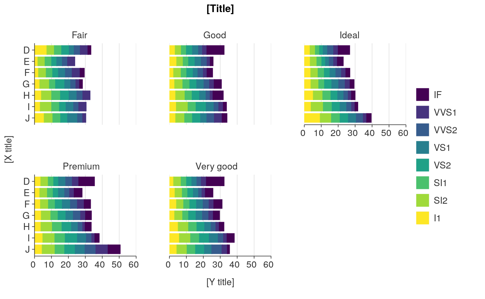

R/ggplot_hbar_fun.R
ggplot_hbar_col_facet.RdHorizontal bar ggplot that is coloured and facetted.
ggplot_hbar_col_facet(data, x_var, y_var, col_var, facet_var, hover_var = NULL, x_scale_zero = TRUE, x_scale_trans = "identity", y_scale_rev = FALSE, col_scale_rev = FALSE, col_scale_drop = FALSE, position = "stack", facet_scales = "fixed", facet_nrow = NULL, pal = NULL, legend_ncol = 3, title = "[Title]", subtitle = NULL, x_title = "[X title]", y_title = "[Y title]", col_title = "", caption = "", legend_labels = NULL, font_family = "Helvetica", font_size_title = 11, font_size_body = 10, wrap_title = 70, wrap_subtitle = 80, wrap_x_title = 50, wrap_y_title = 50, wrap_y_label = 50, wrap_col_title = 25, wrap_caption = 80, isMobile = FALSE)
| data | An ungrouped summarised tibble or dataframe. Required input. |
|---|---|
| x_var | Unquoted numeric variable to be on the x axis. Required input. |
| y_var | Unquoted categorical variable to be on the y axis. Required input. |
| col_var | Unquoted categorical variable to colour the bars. Required input. |
| facet_var | Unquoted categorical variable to facet the data by. Required input. |
| hover_var | Unquoted variable to be an additional hover variable for when used inside plotly::ggplotly(). Defaults to NULL. |
| x_scale_zero | TRUE or FALSE whether the minimum of the x scale is zero. Defaults to TRUE. |
| x_scale_trans | A string specifying a transformation for the x scale. Defaults to "identity". |
| y_scale_rev | TRUE or FALSE of whether bar order from top to bottom is reversed from default. Defaults to FALSE. |
| col_scale_rev | TRUE or FALSE of whether bar fill order from left to right is reversed from default. Defaults to FALSE. |
| col_scale_drop | TRUE or FALSE of whether to drop unused levels from the legend. Defaults to FALSE. |
| position | Whether bars are positioned by "stack" or "dodge". Defaults to "stack". |
| facet_scales | Whether facet_scales should be "fixed" across facets, "free" in both directions, or free in just one direction (i.e. "free_x" or "free_y"). Defaults to "fixed". |
| facet_nrow | The number of rows of facetted plots. Defaults to NULL, which generally chooses 2 rows. Not applicable to where isMobile is TRUE. |
| pal | Character vector of hex codes. Defaults to NULL, which selects the Stats NZ palette. |
| legend_ncol | The number of columns in the legend. |
| title | Title string. Defaults to [Title]. |
| subtitle | Subtitle string. Defaults to [Subtitle]. |
| x_title | X axis title string. Defaults to [X title]. |
| y_title | Y axis title string. Defaults to [Y title]. |
| col_title | Colour title string for the legend. Defaults to NULL. |
| caption | Caption title string. Defaults to NULL. |
| legend_labels | A vector of manual legend label values. Defaults to NULL, which results in automatic labels. |
| font_family | Font family to use. Defaults to "Helvetica". |
| font_size_title | Font size for the title text. Defaults to 11. |
| font_size_body | Font size for all text other than the title. Defaults to 10. |
| wrap_title | Number of characters to wrap the title to. Defaults to 70. Not applicable where isMobile equals TRUE. |
| wrap_subtitle | Number of characters to wrap the subtitle to. Defaults to 80. Not applicable where isMobile equals TRUE. |
| wrap_x_title | Number of characters to wrap the x title to. Defaults to 50. Not applicable where isMobile equals TRUE. |
| wrap_y_title | Number of characters to wrap the y title to. Defaults to 50. Not applicable where isMobile equals TRUE. |
| wrap_y_label | Number of characters to wrap the y labels to. Defaults to 50. Not applicable where isMobile equals TRUE. |
| wrap_col_title | Number of characters to wrap the colour title to. Defaults to 25. Not applicable where isMobile equals TRUE. |
| wrap_caption | Number of characters to wrap the caption to. Defaults to 80. Not applicable where isMobile equals TRUE. |
| isMobile | Whether the plot is to be displayed on a mobile device. Defaults to FALSE. In a shinyapp, isMobile should be specified as input$isMobile. |
A ggplot object.
plot_data <- ggplot2::diamonds %>% dplyr::mutate(cut = stringr::str_to_sentence(cut)) %>% dplyr::group_by(cut, clarity, color) %>% dplyr::summarise(average_price = mean(price)) %>% dplyr::mutate(average_price_thousands = round(average_price / 1000, 1)) %>% dplyr::ungroup() plot <- ggplot_hbar_col_facet(data = plot_data, x_var = average_price_thousands, y_var = color, col_var = clarity, facet_var = cut)#> Warning: Ignoring unknown aesthetics: textplot#> Warning: Removed 2 rows containing missing values (geom_col).